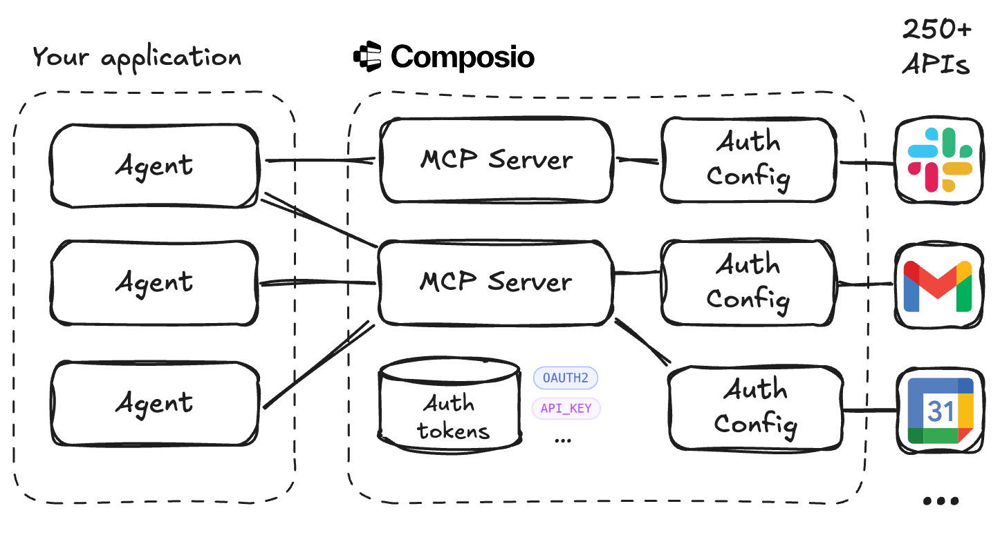

Agent Authorization Without the Pain
Your agent needs to read from your Google Calendar and send emails through Gmail. This seemingly simple requirement quickly becomes complex when you realize you need OAuth flows, token refresh logic, and secure credential storage. Multiply that by every API your agent needs.
You shouldn't have to build this infrastructure yourself. Connect your agents to 250+ APIs and 3000+ tools with Model Context Protocol (MCP) and Composio. Composio handles authorization, remote MCP servers and tool execution, while your application focuses on agentic reasoning and tool usage.
Note
I'm not affiliated with Composio, I'm just a happy user. What they do is IMO the right separation of concerns for building agentic applications.
Architecture

Your Application
- Agents connect to Composio MCP servers and use their tools
- Agents act on behalf of users that authorized API access
- Agents focus on reasoning and tool usage, not plumbing
Composio Layer
- MCP servers act as protocol bridges to external APIs
- Each API has auth configs, with a connected account per user
- Auth tokens are stored securely, supporting OAuth2, API keys, etc.
Key Benefits
- No OAuth flows or token management in your code
- Access 250+ APIs and 3000+ tools through MCP
- Clean separation between agent logic and API integration
Example
The complete code is at github.com/krasserm/agent-auth. What follows is an overview of the key steps needed to authorize an agent to use Google Calendar on behalf of a user:
Install the Composio Python library, used to access the Composio REST API.
Create an auth configuration for the googlecalendar toolkit, using OAUTH2 as authScheme.
client = Composio(api_key=os.getenv("COMPOSIO_API_KEY"))
response = client.auth_configs.create(
toolkit={"slug": "googlecalendar"},
auth_config={
"name": "calendar-example",
"type": "use_composio_managed_auth",
"authScheme": "OAUTH2"
}
)
auth_config_id = response.auth_config.id
Add a connected account to the auth config and link a user_id to it. That's the id of a user managed by your application, not by Composio.
response = client.connected_accounts.create(
auth_config={"id": auth_config_id},
connection={"user_id": "martin"},
)
Initiate the authorization process by redirecting to an OAuth consent screen in a browser window. After completion, the connected account is authorized to use Google Calendar on behalf of the user who granted access.
Create an MCP server for the auth config created in step 2 and specify the tools that should be exposed.
result = client.mcp.create(
name="calendar-mcp-server",
auth_config_ids=[auth_config_id],
allowed_tools=["GOOGLECALENDAR_FIND_EVENT"]
)
Create an MCP server URL that uses the connected account linked to martin.
mcp_url = result.mcp_url.replace("transport=sse", "user_id=martin")
# i.e. https://mcp.composio.dev/composio/server/<uuid>?user_id=martin
# <uuid> is a string of pattern 12345678-90ab-cdef-1234-567890abcdef
Configure a Pydantic AI agent with the mcp_url so that it can use Google Calendar on behalf of the user who granted access in step 4.